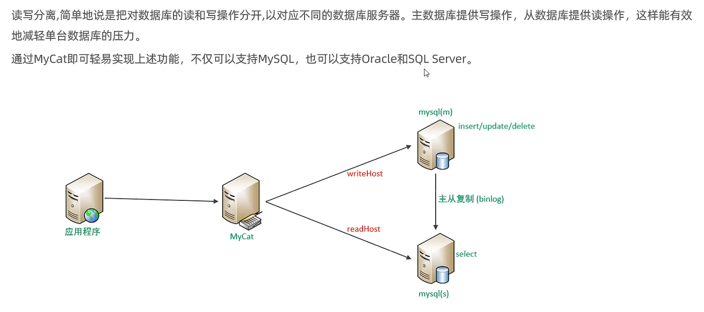
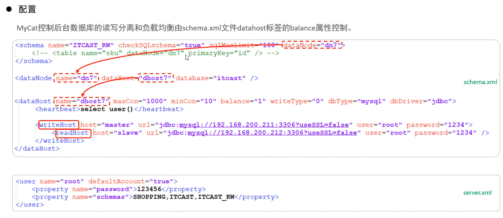
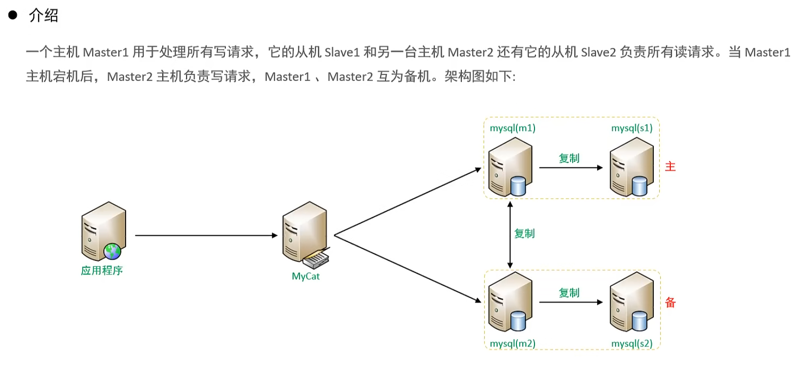

04读写分离
一行代码不改，让写走主库、读走从库。这一页按课程的顺序走：先一主一从改三处配置跑通，再上双主双从——多两台机器、四台 my.cnf、四条复制链路，最后验「主库停掉，写还在」。
一屏速记合上笔记，这 4 条要能自己说出来
- 读写分离只决定「SQL 发给谁」，它不复制数据。从库上的数是主从复制搬过去的，复制没通，切得再准也只是把读发给一个空库。
- 一主一从只改
schema.xml三处：schema → dataNode → dataHost。最后把readHost塞进writeHost里面。三个名字必须首尾相接。 balance决定读怎么分：0读也走主库，1从库加备用主库都读，2主从随机，3只读从库。一主一从下1和3结果一样，差别要到双主双从才显出来。- 双主双从买的是「写」的高可用：
writeType=0写第一台、挂了写第二台，switchType=1才自动切。切过去不会自己切回来。
1. 它解决什么
读写分离把读和写分到不同服务器：主库只接写，从库接读。多数业务读远多于写，读分出去以后，主库的锁竞争、缓冲池和 CPU 都松下来了。
但因果要说清：读写分离本身不搬数据。从库上的数据是主从复制同步过去的（02 章）。复制没配好，MyCat 分发得再准，读的也是一份旧数据或空库。


insert / update / delete 走 writeHost，select 走 readHost，两台之间那条线是已经配好的主从复制。点击放大MyCat 的判据是语句类型，不是业务语义。它看这条 SQL 是不是 select，是就发读节点，不是就发写节点。所以「这条查询必须读到最新值」这种需求，别指望它猜得到。
一、复制是通的。SHOW REPLICA STATUS 两个 Yes，Seconds_Behind_Source 在你能接受的范围内。
二、业务能接受读延迟。复制是异步的：主库提交完就返回，从库可能晚几十毫秒到几秒。刚写完立刻查，读到旧值是正常现象，不是 bug。
三、别指望事务内的读也走主库。MyCat 按单条语句分发，不认事务边界。一个事务里先 update 再 select，那条 select 照样可能被发到从库。
2. 一主一从：只改三处
一台主库 .211 写、一台从库 .212 读。全部改动都在 schema.xml，三个名字把三段配置串起来，改完 reload 就生效。
<schema name="ITCAST_RW" checkSQLschema="true" sqlMaxLimit="100"
dataNode="dn7" /> <!-- ① -->
<dataNode name="dn7" dataHost="dhost7" database="itcast" /> <!-- ② -->
<dataHost name="dhost7" maxCon="1000" minCon="10"
balance="1" writeType="0" switchType="1"
dbType="mysql" dbDriver="jdbc">
<heartbeat>select user()</heartbeat>
<writeHost host="master"
url="jdbc:mysql://192.168.200.211:3306?useSSL=false&serverTimezone=Asia/Shanghai"
user="root" password="1234">
<readHost host="slave" <!-- ③ -->
url="jdbc:mysql://192.168.200.212:3306?useSSL=false&serverTimezone=Asia/Shanghai"
user="root" password="1234" />
</writeHost>
</dataHost>课程原图上那几个红箭头标的就是这三个值要对应：


| 位置 | 写错会怎样 | 说明 |
|---|---|---|
| ① 逻辑库 → 节点 | 启动失败 | schema 的 dataNode 必须等于 dataNode 的 name，同一个字符串。 |
| ② 节点 → 主机 | 启动失败 | dataNode 的 dataHost 必须等于 dataHost 的 name。同一行里的 database 填物理库名 itcast，不是逻辑库 ITCAST_RW。 |
| ③ 从库写在哪 | 从库不生效 | readHost 必须嵌在 writeHost 内部。写成并列的两个标签，MyCat 不报错，但读全压主库。 |
server.xml 的 schemas | 登录后看不到库 | 用户能看见的逻辑库要在 <property name="schemas">ITCAST_RW</property> 里列出。 |
balance：读到底发给谁
这是本页最该记牢的一个值。课程的四行表：
| 取值 | 行为 |
|---|---|
0 | 不开启读写分离，所有读也发到当前可用的 writeHost。等于白配。 |
1 | 全部 readHost 与备用的 writeHost 都参与 select 的负载均衡。主要给双主双从用。 |
2 | 读写都随机发到 writeHost、readHost。写也会被发到从库，实际很少用。 |
3 | 读请求随机分发到 writeHost 对应的 readHost，writeHost 不承担读压力。 |
1 里的「备用 writeHost」，一主一从时并不存在
1 的完整语义是「全部 readHost 加备用 writeHost 参与 select」。一主一从只有一个 writeHost，而且它是正在用的那台、不是「备用」——所以主库不参与读，读全落在从库上，填 1 没问题。
这也是一主一从下 1 和 3 看不出区别的原因：只有一个 readHost 时两种取值结果相同。差别要到第 6 节才出现——那时 M2 是「备用的 writeHost」，1 会让它一起分担读。
分库分表那章的逻辑库叫 DB01，这一章课程用的是 ITCAST_RW、物理库 itcast。名字只是示例，改哪几处、怎么对应，两章完全一样。
3. 双主双从：多两台的理由
一主一从的死穴很直接：主库一停，写全断。MyCat 的 switchType 换的是同一个 dataHost 里的另一个 writeHost，只有一个 writeHost 时无处可切，只能等主库活过来。
双主双从就是补这个洞：两台主库互为主备，M1 接写、M2 待命，各自再带一个从库分担读。M1 挂了，MyCat 把写切到 M2；M1 修好后从 M2 把数据追回来。


M1 → S1、M2 → S2、M1 ↔ M2 双向。没有中间那条竖线，「切到 M2 再切回来」这条路就断了。点击放大五台机器的分工：
| # | IP | 角色 | 装什么 |
|---|---|---|---|
| 1 | 192.168.200.210 | MyCat | MyCat 中间件 + 可选的一个 MySQL（课程里 .210 同时是第一台分片，本页用不到） |
| 2 | 192.168.200.211 | M1 主 | MySQL，默认接所有写 |
| 3 | 192.168.200.212 | S1 从 | MySQL，复制 M1，分担读 |
| 4 | 192.168.200.213 | M2 备主 | MySQL，M1 挂了接写；平时也参与读 |
| 5 | 192.168.200.214 | S2 从 | MySQL，复制 M2，分担读 |
开工前把五台的防火墙关掉——复制和 MyCat 的连接都靠端口，开着防火墙调试会很痛苦：
systemctl stop firewalld
systemctl disable firewalld架构图上 M2 标着「备」，但那是写的备。第 6 节配 balance="1" 之后，M2、S1、S2 三台都在接 select，只有 M1 被排除在读之外。
把它当「备用机器所以性能可以差一点」是常见的误判，它平时是干活的。
4. 四台的 my.cnf
四台 MySQL 只加三类配置：唯一的 server-id、要同步的库、以及两台主库各自的 log-slave-updates。改完四台都重启。
| 机器 | IP | server-id | log-slave-updates | 角色 |
|---|---|---|---|---|
| M1 | .211 | 1 | 要 | 主，同时是 M2 的从 |
| S1 | .212 | 2 | 不要 | M1 的从，只读 |
| M2 | .213 | 3 | 要 | 备主，同时是 M1 的从 |
| S2 | .214 | 4 | 不要 | M2 的从，只读 |
M1 的 /etc/my.cnf，在 [mysqld] 段里加：
[mysqld]
# 集群内唯一，四台不能重
server-id=1
# 只同步这三个库
binlog-do-db=db01
binlog-do-db=db02
binlog-do-db=db03
# 作为从库收到的事件，也要写进自己的 binlog
log-slave-updatesM2 把 server-id 改成 3，其余一样。S1、S2 只写 server-id（分别是 2 和 4），不需要后两项。
log-slave-updates
M2 从 M1 收到的事件，默认只落到自己的 relay log，不写进 M2 的 binlog。而 S2 只认 M2 的 binlog——不开这个开关，M1 写的数永远到不了 S2。
这就是「级联复制」的前提：中间那台既当从库、又要把收到的东西继续往下发，就必须自己写 binlog。同理，M1 挂了切到 M2 之后，M1 恢复时也要靠这条链路把 M2 上的新数据追回来。
binlog-do-db 看的是「当前默认库」，不是表所在的库
判断依据是执行语句时 USE 的那个库。所以：
USE db02;
UPDATE db01.tb_user SET name='x' WHERE id=1; -- 这条不会进 binlog从库上就少了这一行，而且主库本地执行成功、不报任何错——最难查的一类不同步。
两件事保平安：跨库操作前显式 USE 到目标库；或者干脆不用 binlog-do-db，做全量复制，用 binlog-ignore-db 排除系统库。
四台都重启：
systemctl restart mysqld重启后各自 SELECT @@server_id;，四台的值必须是 1 / 2 / 3 / 4，重了直接停复制。
5. 接上复制：四条链路
课程文档里只写了「两台从库指向各自的主库」两条。但图 3 里 M1 与 M2 之间那条双向箭头也是复制——不配它，双主就不成立：M2 接写之后产生的数据，M1 恢复时追不回来。
| 链路 | 谁指向谁 | 作用 |
|---|---|---|
| ① | S1 → M1 | 正常的读写分离：M1 的写同步给 S1，S1 承担读。 |
| ② | S2 → M2 | 同上，S2 读 M2 的数据。 |
| ③ | M2 → M1 | M1 的写要能流到 M2，再由 M2 转给 S2（靠 log-slave-updates）。 |
| ④ | M1 → M2 | M1 挂了以后写到 M2；M1 恢复时靠这条把 M2 的新数据追回来。 |
表里的箭头写的是配置方向：M2 → M1 表示在 M2 上 CHANGE REPLICATION SOURCE 指向 M1，数据实际是从 M1 流到 M2。③④ 两条正好相反，别看反。
- 两台主库各建一个复制账号M1 / M2 · 各自的 3306
CREATE USER 'repl'@'%' IDENTIFIED BY 'Root@123456'; GRANT REPLICATION SLAVE ON *.* TO 'repl'@'%';账号在两台主库上都要有——因为对方既是主、也是从，都要来连。
- 四个方向各配一次在「从」的那一台上执行
S1 指向 M1：
CHANGE REPLICATION SOURCE TO SOURCE_HOST='192.168.200.211', SOURCE_PORT=3306, SOURCE_USER='repl', SOURCE_PASSWORD='Root@123456', SOURCE_LOG_FILE='binlog.000001', SOURCE_LOG_POS=157;S2 把
SOURCE_HOST换成192.168.200.213；M2 换成.211；M1 换成.213。位点用各自主库上SHOW MASTER STATUS;的File和Position。8.0.23 之前的老写法是
CHANGE MASTER TO MASTER_HOST=… MASTER_LOG_FILE=…，课程 PPT 用的就是它，两条语句等价。 - 启动并验收四台
START REPLICA; SHOW REPLICA STATUS\G每台都是
Replica_IO_Running: Yes、Replica_SQL_Running: Yes，且Source_Host指向对的那台。8.0.22 之前这两个字段叫Slave_IO_Running/Master_Host。
两台都能写，各自 AUTO_INCREMENT 从 1 开始数。M1 插入 id=5、M2 同时插入 id=5，复制到对端就是 Duplicate entry '5' for key 'PRIMARY'，SQL 线程直接停——而且这种停是静默的，只有去看状态才发现。
两个办法，选一个：
-- M1
SET GLOBAL auto_increment_increment = 2;
SET GLOBAL auto_increment_offset = 1; -- 奇数：1,3,5…
-- M2
SET GLOBAL auto_increment_increment = 2;
SET GLOBAL auto_increment_offset = 2; -- 偶数：2,4,6…写进 my.cnf 才能重启后保持。更彻底的做法是业务侧生成全局唯一 ID（雪花算法之类），数据库不再依赖自增。
还有一点值得知道：双向复制为什么不会无限反弹。每个复制事件头里带着产生它的 server_id，从库收到后发现「这个 id 是我自己」，直接丢弃（replicate_same_server_id 默认 0）。所以四个 server-id 必须各不相同——不是为了好看。
6. 双主双从的 XML
结构只比一主一从多一层：两个 writeHost 并列，各自带一个 readHost。三个属性的值一起决定「写去哪、读去哪、挂了怎么办」。
<dataHost name="dhost7" maxCon="1000" minCon="10"
balance="1" writeType="0" switchType="1"
dbType="mysql" dbDriver="jdbc">
<heartbeat>select user()</heartbeat>
<writeHost host="master1"
url="jdbc:mysql://192.168.200.211:3306?useSSL=false&serverTimezone=Asia/Shanghai"
user="root" password="1234">
<readHost host="slave1"
url="jdbc:mysql://192.168.200.212:3306?useSSL=false&serverTimezone=Asia/Shanghai"
user="root" password="1234" />
</writeHost>
<writeHost host="master2"
url="jdbc:mysql://192.168.200.213:3306?useSSL=false&serverTimezone=Asia/Shanghai"
user="root" password="1234">
<readHost host="slave2"
url="jdbc:mysql://192.168.200.214:3306?useSSL=false&serverTimezone=Asia/Shanghai"
user="root" password="1234" />
</writeHost>
</dataHost>| 属性 | 值 | 实际效果 |
|---|---|---|
balance | 1 | 所有 readHost 加备用 writeHost 都参与 select。这一套配置下的实际效果：S1、S2、M2 都读，M1 只写。 |
3 | 只读 readHost。想彻底不让 M2 分担读时用它，但 M1 挂了之后读的余量会少一台。 | |
writeType | 0 | 写全发第一个 writeHost，它挂了才发第二个。双主必须用 0。 |
1 | 随机发到一个 writeHost。两台都在写，双主下等于主动制造主键冲突，别用。 | |
switchType | 1 | 默认值，靠 <heartbeat> 探活，失败就自动切到下一个 writeHost。 |
-1 | 不自动切。切换由人决定，适合「宁可停一会儿也不能写错」的场景。 | |
2 | 依据 MySQL 的主从状态判断是否切换，比心跳更谨慎。 |
MyCat 把写切到 M2 之后，会在 conf/dnindex.properties 里记下当前用的是哪个 writeHost，重启也照这个来。M1 修好之后，MyCat 仍然写 M2。
这时候最危险的动作是「M1 好了，手动让它也接写」——两边同时写，撞主键、数据分叉。正确顺序：
① 确认 M1 的复制已经追平（SHOW REPLICA STATUS 里 Seconds_Behind_Source 归零，Replica_SQL_Running: Yes）→ ② 决定留 M2 还是回 M1 → ③ 回 M1 的话改回配置并重启 MyCat（reload 不重置这个记录）→ ④ 把旧的那台设成只读，防止有人直连写进去。
7. 验三件事
配完别急着说通，按顺序验：写进去从库有 → 读真的落在从库 → 主库停掉写还在。三件都过，才算搭成。
- 写进去，从库能查到MyCat 8066 · 然后到 S1 的 3306
mysql -h192.168.200.210 -P8066 -uroot -pUSE ITCAST_RW; CREATE TABLE tb_user ( id INT PRIMARY KEY, name VARCHAR(50) NOT NULL ) ENGINE=InnoDB DEFAULT CHARSET=utf8mb4; INSERT INTO tb_user VALUES (1,'Tom'),(2,'Jerry');然后到 S1 上直连 3306 看：
SELECT * FROM itcast.tb_user;两条都在。查不到就回到第 4、5 节：
log-slave-updates开了没、SHOW REPLICA STATUS是不是两个 Yes。 - 读真的走了从库S1 · 3306
MyCat 的读发给了谁，肉眼看不出来。最直接的办法是在从库上开 general log，再从 MyCat 查一次：
SET GLOBAL general_log = ON; SET GLOBAL log_output = 'TABLE';SELECT event_time, argument FROM mysql.general_log WHERE argument LIKE '%tb_user%' ORDER BY event_time DESC LIMIT 10;出现了
select * from tb_user，说明读确实到 S1 了。查不到、只有 M1 有——balance还是0，或者readHost写在了writeHost外面。 - 主库停掉，写还在.211 停服务，然后在 MyCat 里写
systemctl stop mysqldINSERT INTO tb_user VALUES (3,'Spike');再看心跳和落点：
mysql -h192.168.200.210 -P9066 -uroot -p show @@heartbeat;插入成功、数据出现在 M2（以及 S2），
show @@heartbeat里 master1 变成失败状态。没切过去，先确认switchType是不是1。测完记得
systemctl start mysqld把 M1 拉起来，并按第 6 节那段「切过去不会切回来」的顺序处理。
8. 五个坑
| 现象 | 原因 | 怎么办 |
|---|---|---|
| 刚写完，MyCat 里查不到 | 复制异步，读被发到还没追上的从库 | 关键读单独配一个只含主库的 dataHost，别和普通读共用 |
| 事务里先写后读，读到旧值 | MyCat 按语句分发，不认事务边界 | 事务内要强一致就直连主库，或把这批读挪到事务外 |
配了 readHost 但读全压主库 | balance="0"，或 readHost 写成了并列标签 | 改成 3；确认 readHost 在 writeHost 内部 |
| 从库 SQL 线程停，报 1062 | 双主两边写了同一个主键 | 删掉冲突行 → START REPLICA；根治靠自增错开或全局 ID |
| M1 恢复后两边都在写 | dnindex.properties 记着上次切到 M2，不会自动回 | 人工确认追平后再改配置并重启 MyCat，旧主设只读 |
配置改完没反应，先看这两条：schema.xml 可以热加载，server.xml 必须重启。
mysql -h192.168.200.210 -P9066 -uroot -p
reload @@config; -- 重读 schema.xml / rule.xml
show @@datanode; -- 节点是否可用
show @@heartbeat; -- 心跳，判断主库是否还活着改的是 server.xml 却只跑了 reload，改动不会生效——这是「明明改对了却没用」最常见的原因。
自测三问先自己答，再展开对照
Q1balance="1" 在一主一从和双主双从下，读的分发有什么不同？
一主一从：只有 readHost（S1）参与读，主库只写。因为 1 里的「备用 writeHost」这时候根本不存在——唯一的 writeHost 是正在用的主库，不是备用的。
双主双从：M2 就是那个「备用 writeHost」，于是 M2、S1、S2 三台一起分担 select，只有 M1 被排除在读之外。
想让备用主库也不读，用 3（读只发给 readHost）。
Q2双主双从里，为什么两台主库都要开 log-slave-updates？
因为 S2 只认 M2 的 binlog。M2 从 M1 收到的事件默认只写 relay log，不写自己的 binlog——不开这个开关，M1 写的数永远到不了 S2。
同理 M1 也要开：它挂了以后从 M2 追数据，追到的东西得能继续往下发给 S1。中间那台既当从、又要把收到的东西往下发，就必须自己写 binlog。
Q3M1 挂过、MyCat 已经切到 M2 了。M1 修好之后，它能自动接回写吗？
不能。MyCat 把当前使用的 writeHost 记在 conf/dnindex.properties 里，重启也按它来，没有「切回原主」的机制。
而且直接让 M1 接写很危险：它停机期间 M2 写的数还没同步过来，两边同时写会撞主键、数据分叉。正确做法是等 M1 的复制追平（Seconds_Behind_Source 归零）再决定留谁，切换要重启 MyCat，切换后把没在用的那台设成只读。
资料
参考：MyCat 官网 · MySQL 8.0 复制配置 · 复制相关系统变量 · 复制与 AUTO_INCREMENT
核对日期 2026-11-27。配置按 MyCat 1.6 文档与课程内容整理，没有在五台真实实例上逐条执行验证；第一次搭建时以每步的验收输出为准。课程 PPT 用的是 CHANGE MASTER / SHOW SLAVE STATUS 老语法，8.0.23 起对应的新语法在正文里已标注。balance 的取值语义以 MyCat 1.6 为准，MyCat2 不兼容这套配置。